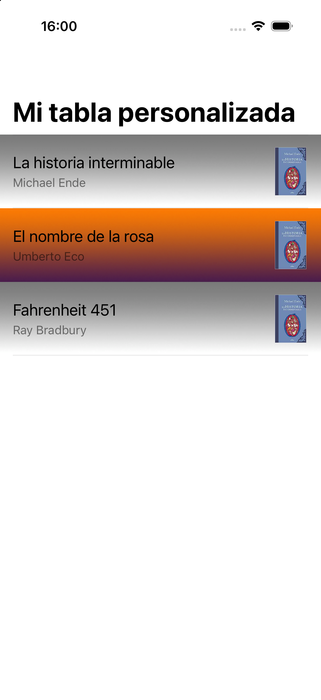

2- Guías de estilo y personalización
En esta sesión veremos primero las recomendaciones de diseño de Apple (las Human Interface Guidelines, o HIG) y después cómo personalizar el aspecto de listas y barras en SwiftUI.
Guías de estilo en iOS
Apple publica sus recomendaciones de diseño en las Human Interface Guidelines. No son una norma de obligado cumplimiento, pero conviene conocerlas: una app que se sale de ellas sin motivo resulta extraña al usuario, y puede ser rechazada en la revisión de la App Store.
Principios de diseño
Los principios que Apple viene manteniendo son tres:
- Claridad. El texto debe ser legible a cualquier tamaño, los iconos precisos, los adornos escasos. El espacio en blanco, el color y la tipografía deben destacar el contenido importante y facilitar la interacción.
- Deferencia (deference). El interfaz está al servicio del contenido, no al revés. Los elementos de la interfaz deben ser ligeros y no competir con lo que el usuario ha venido a ver.
- Profundidad. Las capas visuales y las transiciones ayudan a entender la jerarquía de la aplicación y dan sensación de continuidad al navegar.
En la práctica, lo que debe cumplir una aplicación es:
- Integridad estética: el aspecto visual debe encajar con lo que la app hace. Un juego puede permitirse una interfaz vistosa; una app de contabilidad, no.
- Consistencia: usar los elementos estándar que el usuario ya conoce, y mantener un diseño uniforme en toda la app.
- Adaptabilidad: la pantalla debe responder al giro del dispositivo, al modo oscuro y al tamaño de letra que el usuario haya elegido en los ajustes del sistema.
- Feedback: hay que confirmar las acciones del usuario y mostrar sus resultados.
Antes de diseñar conviene saber a qué público va dirigida la app, y hacer un diseño previo con herramientas de mockups como Play o Balsamiq, aunque usando Preview en SwiftUI suele ser suficiente.
Liquid Glass: el rediseño de iOS 26
iOS 26 introdujo Liquid Glass, el cambio de aspecto más profundo del sistema desde iOS 7. Los controles y las barras se dibujan ahora sobre un material translúcido que refracta y refleja el contenido que tienen debajo, y adoptan formas de cápsula con esquinas muy redondeadas.
Para el desarrollo, lo importante no es el efecto en sí sino sus consecuencias prácticas:
- El contenido manda todavía más. El material de las barras es translúcido y deja ver lo que hay detrás. Conviene que el contenido llegue por debajo de las barras en lugar de dejar franjas opacas.
- Los controles estándar se adaptan solos. Un
Button, unPickero unaListadoptan el aspecto nuevo sin tocar nada, y seguirán adaptándose en futuras versiones. - La personalización que pelea con el sistema se rompe. Esta es la lección importante, y la veremos en el segundo ejercicio. Intentar imponer un aspecto colocando vistas por debajo de una barra, o manipulando las vistas internas de un control, deja de funcionar o produce resultados ilegibles en cuanto el sistema cambia de aspecto. Lo que se personaliza por los puntos previstos sigue funcionando.
La regla práctica
Personaliza a través de los modificadores que ofrece el sistema
(.tint, .background, .foregroundStyle, .toolbarBackground…). Si para
conseguir un efecto necesitas inspeccionar o manipular las vistas internas de un
componente, es muy probable que deje de funcionar en la siguiente versión de iOS.
Adaptabilidad: modo oscuro y tamaño de letra
Dos ajustes que el usuario controla desde el sistema y que tu app debe respetar.
Modo oscuro. No uses colores absolutos. En lugar de Color.black o Color.white, usa los colores semánticos, que ya se adaptan:
Text("Título")
.foregroundStyle(.primary) // se adapta a claro/oscuro
Text("Subtítulo")
.foregroundStyle(.secondary)
Puedes comprobarlo en la preview sin tocar el simulador:
#Preview("Oscuro") {
ContentView().preferredColorScheme(.dark)
}
Tamaño de letra dinámico (Dynamic Type). Si usas los estilos del sistema
(.title, .body, .caption…) en lugar de tamaños fijos, el texto crecerá cuando el
usuario aumente el tamaño de letra en los ajustes:
Text("Se adapta").font(.body) // bien
Text("No se adapta").font(.system(size: 17)) // evítalo
Accesibilidad
Es mucho más fácil tenerla en cuenta desde el principio que añadirla después. Lo mínimo:
- Poner una descripción a las imágenes que transmiten información, para que VoiceOver pueda leerlas:
Image("portada")
.accessibilityLabel("Portada de La historia interminable")
- Las imágenes puramente decorativas se marcan para que VoiceOver las ignore:
Image("fondo").accessibilityHidden(true)
- Mantener contraste suficiente entre texto y fondo. Esto es especialmente relevante al poner imágenes de fondo, como haremos en los ejercicios de esta sesión.
Componentes disponibles
En este enlace están todos los componentes del sistema. Se agrupan en:
- Contenido: para mostrar texto, imágenes, gráficos o contenido web.
- Distribución y organización: listas, rejillas, tablas, secciones.
- Menús y acciones: botones, menús, pop-ups.
- Navegación y búsqueda: barras de navegación, tab bars, campos de búsqueda.
- Presentación: alertas, hojas modales, popovers, controles de página.
- Selección y entrada: pickers, toggles, sliders, campos de texto.
- Estado: barras de progreso, medidores.
- Experiencias del sistema: notificaciones, widgets, barra de estado.
Personalización en SwiftUI
Personalizar es modificar el aspecto visual de los componentes estándar. Por norma general no se recomienda, porque confunde al usuario, pero hay casos donde es necesario: juegos, apps con identidad de marca propia, o listas donde cada fila debe mostrar información estructurada.
La personalización de las celdas de una lista es la excepción: es algo completamente habitual en iOS, y es con lo que empezaremos.
Ejercicio 1 - Personalización de celdas
Vamos a construir una lista de libros donde cada fila muestra la portada, el título y el autor, con un fondo que alterna entre dos imágenes (efecto zebra). Este es el resultado al que queremos llegar:

La idea clave es que una celda no es nada especial: es una vista más, como las que construiste en la sesión anterior. Por eso dentro de una fila puedes poner cualquier combinación de textos, imágenes y contenedores.
Creando el proyecto
Crea un proyecto iOS > App con Interface: SwiftUI llamado ejercicio_celdas.
Descarga imagenes_celdas.zip y
arrastra las tres imágenes (fondo_celda1.png, fondo_celda2.png e historia.jpg) a
los Assets del proyecto.
El modelo
Crea un fichero Libro.swift:
import Foundation
struct Libro {
let titulo: String
let autor: String
let imagen: String // nombre del asset
}
Fíjate en que el modelo guarda el nombre de la imagen, no un objeto imagen. En
SwiftUI es lo habitual: la vista crea el Image a partir del nombre cuando le toca
dibujarse.
La celda
Crea un fichero CeldaLibro.swift con la vista de una fila. Recibe el libro que debe
mostrar y el nombre de la imagen de fondo que le toca:
import SwiftUI
struct CeldaLibro: View {
let libro: Libro
let fondo: String
var body: some View {
HStack {
VStack(alignment: .leading, spacing: 4) {
Text(libro.titulo).font(.title3)
Text(libro.autor).font(.subheadline).foregroundStyle(.secondary)
}
Spacer()
Image(libro.imagen)
.resizable()
.scaledToFit()
.frame(width: 44, height: 60)
}
.padding()
// .background dibuja la imagen por detrás de todo el contenido de la fila
.background(Image(fondo).resizable().scaledToFill())
.listRowInsets(EdgeInsets())
}
}
Dos detalles:
.background(Image(...))coloca la imagen detrás de todo el contenido de la fila. Fíjate en que el modificador va aplicado alHStackentero, no a una vista suelta. Por eso el fondo cubre toda la celda..listRowInsets(EdgeInsets())quita los márgenes queListañade por defecto a cada fila. Sin esto, el fondo no llegaría a los bordes de la pantalla. Prueba a comentar esa línea para ver la diferencia.
La lista
Ahora el ContentView. Este es el esqueleto, en el que falta completar código (abajo vienen los detalles de cómo hacerlo):
import SwiftUI
struct ContentView: View {
let libros = [
Libro(titulo: "La historia interminable", autor: "Michael Ende", imagen: "historia")
// a) Añade aquí dos libros más
]
var body: some View {
NavigationStack {
// b) Aquí va la List
.listStyle(.plain)
.navigationTitle("Mi tabla personalizada")
}
}
}
#Preview {
ContentView()
}
Ejercicio
a) Completa el array libros con dos libros más, los que prefieras. Los tres pueden
compartir la misma imagen de portada ("historia"), o puedes añadir más imágenes a los
Assets si quieres.
b) Escribe la List. Como el fondo alterna, necesitas saber el índice de cada
fila, así que en lugar de recorrer los libros recorreremos sus posiciones:
List(libros.indices, id: \.self) { i in
CeldaLibro(libro: libros[i],
fondo: /* c) aquí decides qué fondo toca */)
}
c) Dentro de la llamada a CeldaLibro, calcula el nombre del fondo: "fondo_celda2"
para las filas pares y "fondo_celda1" para las impares. Puedes usar el operador
ternario junto con i.isMultiple(of: 2).
d) Ejecuta la app y comprueba que las filas alternan el fondo. Prueba también a girar el dispositivo y a lanzarlo en un iPad: como no hemos fijado ninguna posición a mano, debería verse bien en los tres casos sin tocar nada.
e) Accesibilidad. Las imágenes de fondo son decorativas y no aportan
información, así que VoiceOver no debería leerlas. Añade .accessibilityHidden(true)
a la imagen de fondo dentro de CeldaLibro y comprueba que el resto sigue igual.
Para pensar
Una lista con cientos de filas no puede tener cientos de vistas creadas a la vez. Sin embargo, tú no has escrito nada para evitarlo. ¿Quién decide entonces cuántas CeldaLibro existen en un momento dado? Prueba a poner un print dentro del body de CeldaLibro y observa cuándo se ejecuta al desplazar una lista larga.